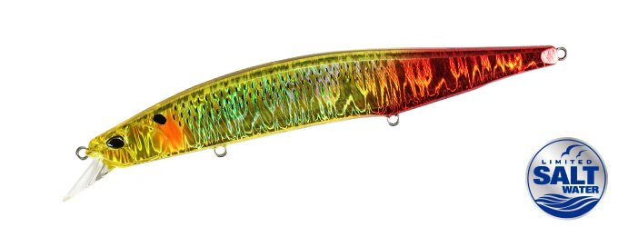
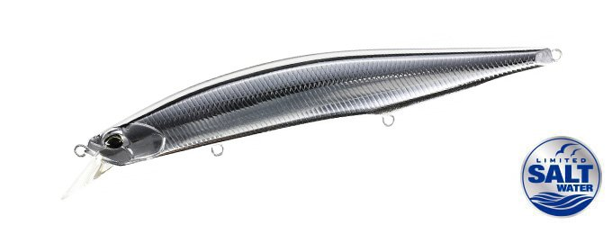
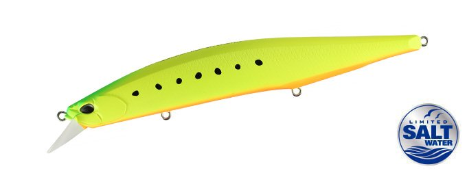
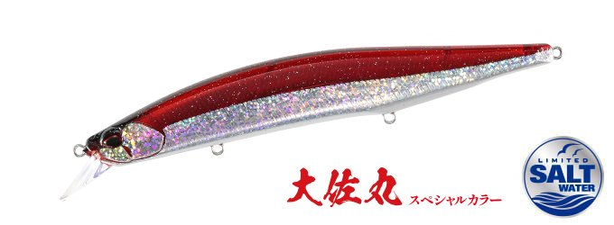

レアリス ジャークベイトSWリミテッド160S
（REALIS JERKBAIT SW LIMITED 160S）
レアリス ジャークベイトSWリミテッド160S（REALIS JERKBAIT SW LIMITED 160S）はDUO（デュオ）のシンキングミノーです。
圧倒的な操作性で人気のレアリス ジャークベイトのソルト仕様「SWリミテッド」の160mmモデル。大型サワラ狙いの新たな一手として、より遠くのナブラや跳ねに届く飛距離と、130Sより約50cm深く入る潜行深度を持たせているのが最大の魅力です。

画像出典:DUO公式HP
スペック
- メーカー
- DUO（デュオ）
- タイプ
- シンキングミノー（重心移動）
- 全長
- 160mm
- 自重
- 35g
- レンジ
- 0〜1.5m
- フック
- #3
- リング
- #3.5
- ターゲット
- サワラ・青物・シーバス
- 価格
- 2,860円（税込）
▼今すぐチェック

レアリス ジャークベイトSWリミテッド160Sの特徴
より遠く、より深く。大型サワラを狙うためのジャークベイト160mm
-
遠くのナブラや跳ねに届く飛距離
サワラ狙いでは飛距離が釣果に直結する。160Sはより遠くのナブラや跳ねに対応するため飛距離をアップし、届かなかった群れにも撃ち込みやすくなっている。
-
130Sより約50cm深く入る潜行深度
潜行深度は130Sよりも約50cm深い0〜1.5m。魚の姿が見えないブラインドの状況でも、存在感のあるボディサイズで一段下の魚にアピールできる。
-
1日ジャークし続けられる軽い引き抵抗
抵抗感を抑えた設計で、1日を通してジャークを続けても軽い力で使い続けられる。サワラゲームのように手返しよく投げ続ける釣りで疲れにくい。
レアリス ジャークベイトSWリミテッド160Sの使い方
基本はジャーク。キャスト後に軽くジャークを入れてダートさせ、追ってきたサワラや青物にリアクションで口を使わせる。ジャークの合間に短いポーズを入れて、食わせの間を作るのがコツです。
ナブラが出ている時は、飛距離を活かして群れの先に投げ、速めのジャークで群れの中を通す。反応が遠い時やブラインドの時は、着水後に少し沈めてから一段下のレンジをジャークで探ります。
レアリス ジャークベイトSWリミテッド160Sの得意な状況
堤防やサーフから、大型のサワラや青物のナブラを狙う状況が最大の出番。
群れが沖にいて届かない時や、表層の反応がなく一段下を探りたい時に選びたい1本です。
ワンポイント
サワラの鋭い歯でラインを切られやすいので、リーダーは太めにするか、ワイヤーリーダーの使用も検討しましょう。
ベイトが小さい時や、もう少し軽く扱いたい時は130S（24.5g）に持ち替えると使い分けがしやすくなります。
レアリス ジャークベイトSWリミテッドの使い分け
| モデル | 全長／自重 | 得意な場面 |
|---|---|---|
| 100SP | 100mm／14.5g | 重心固定・サスペンド・食わせの10cmモデル |
| 100DRS | 100mm／18g | シンキング・レンジ0.5〜4.0m・水深約2mの「一枚下」を攻略 |
| 130S | 130mm／24.5g | シンキング・レンジ〜2m・操作性重視のスタンダード |
| 160S | 160mm／35g | シンキング・レンジ0〜1.5m・飛距離と存在感で大型サワラ狙い（本記事のモデル） |
レアリス ジャークベイトSWリミテッドは100SP・100DRS・130S・160Sの4モデル展開。狙うレンジとベイトサイズでモデルを選び、160Sはシリーズ最大の飛距離と存在感を担う。
オススメカラー
レアリス ジャークベイトSWリミテッド160Sは全13色展開。オススメのカラーを厳選して紹介します。

CPA0645 コノシロバーニングゴールドコノシロパターンにゴールドのフラッシング。大型ベイトが入っている時に。

MCC0522 UV銀ピカベイト強いフラッシングでアピールする銀ピカ系。晴天やナブラ打ちに。

ACC0547 マットチャートイワシマットチャートで視認性とシルエットの強さを両立。朝夕マズメに。

COI3566 UV大佐レッドレッド系のアピールカラー。濁りやローライト時に。
画像出典:DUO公式HP
レアリス ジャークベイトSWリミテッド160Sに似ているルアー
-
 ボルゾイSW160S
シマノ
詳細はこちら＞
ボルゾイSW160S
シマノ
詳細はこちら＞
全長160mmのビッグベイトミノー。同じ160mmクラスで、大型ベイトパターンのサワラ・青物を狙う考え方が共通する。
-
 ボアーSS170
マリア
詳細はこちら＞
ボアーSS170
マリア
詳細はこちら＞
170mmのロックショア青物専用ジャーキングミノー。ジャークのスライドダートで青物にスイッチを入れる使い方が重なる。
-
 セットアッパー145S-DR
ダイワ
詳細はこちら＞
セットアッパー145S-DR
ダイワ
詳細はこちら＞
145mmのシンキングダイバー。ただ巻きで中層を引きたい時はセットアッパー、ジャークで誘いたい時はレアリス160Sと使い分けられる。